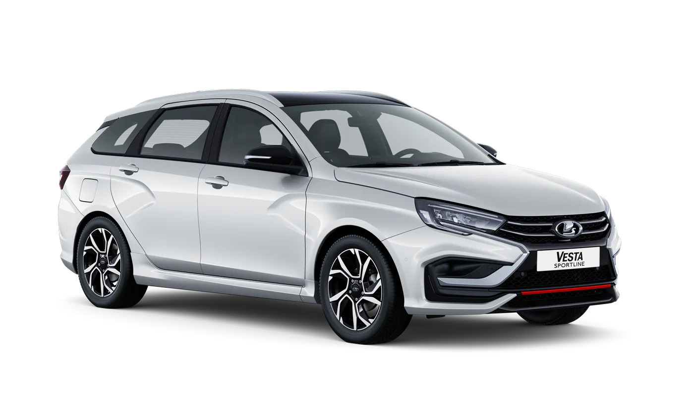

Lada Vesta — российский автомобиль класса B, выпускаемый АвтоВАЗом с 2015 года на площадке в Ижевске. Дизайн модели разрабатывался под руководством Стива Маттина и задал новый фирменный X-стиль марки. Vesta сменила в модельном ряду семейство Priora и быстро стала бестселлером российского рынка, ежегодно входя в тройку самых продаваемых автомобилей страны.Семейство включает седан, универсал SW, приподнятые версии Cross и спортивную Sport, а с 2024 года выпускается обновлённое поколение Vesta NG с переработанным интерьером и современными опциями. Автомобиль оснащается двигателями 1.6 и 1.8 литра мощностью от 90 до 122 л.с. в паре с механикой или вариатором. Vesta ценят за доступную цену, просторный салон, энергоемкую подвеску, приспособленную к плохим дорогам, и дешевизну обслуживания.
История модели
Проект Vesta стартовал в начале 2010-х годов, а концепт-кар в фирменном X-стиле был показан на Московском автосалоне 2014 года. Серийное производство началось 25 сентября 2015 года в Ижевске, и уже в 2018-м модель вошла в тройку бестселлеров рынка России. В 2024 году на конвейер встало поколение Vesta NG с полностью переработанным интерьером, новыми опциями и локализованными компонентами.
Технические характеристики
| Параметр | Значение |
|---|---|
| Двигатель | 1.6 л, 4-цилиндровый |
| Мощность | 106 л.с. |
| Коробка передач | 5-МКПП / вариатор |
| Привод | Передний |
| Разгон 0-100 км/ч | 11.8 с |
| Расход топлива | 6.9 л/100 км |
| Длина | 4410 мм |
| Объём багажника | 480 л |
Модификации
- Vesta Sedan — базовый седан
- Vesta SW — универсал
- Vesta Cross — приподнятый универсал для плохих дорог
- Vesta Sport — спортивная версия со 145 л.с.
- Vesta NG — новое поколение (2024)
Конкуренты
- Hyundai Solaris
- Kia Rio
- Volkswagen Polo
- Skoda Rapid
- Renault Logan
Почему Vesta стала популярной?
- Доступная цена
- Хорошая управляемость
- Просторный салон
- Низкая стоимость обслуживания